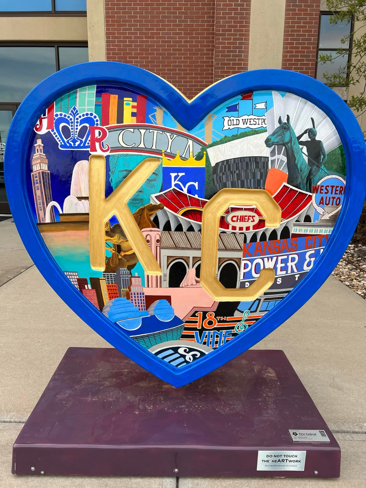
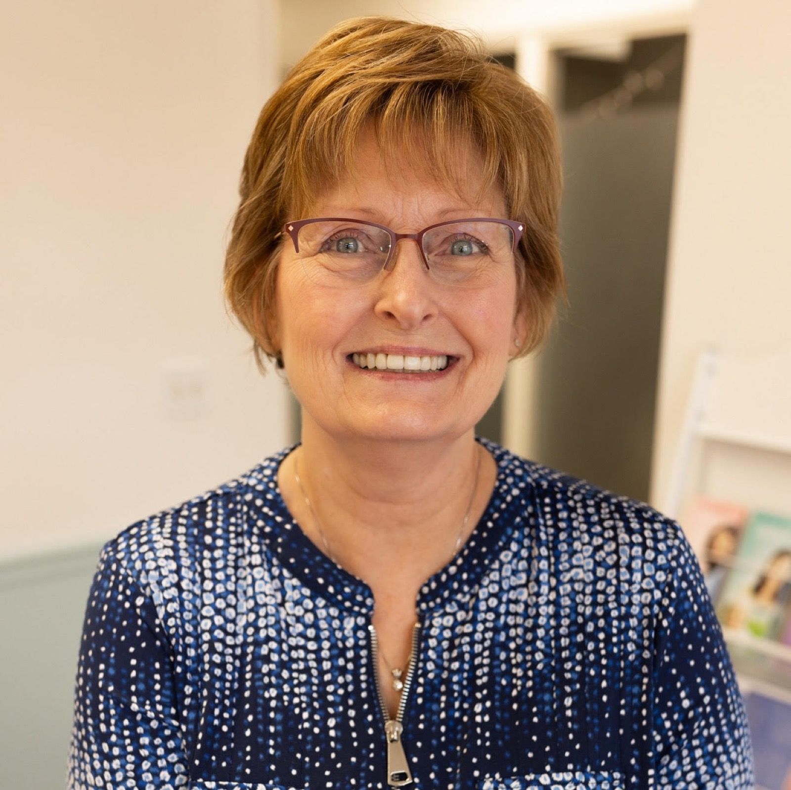
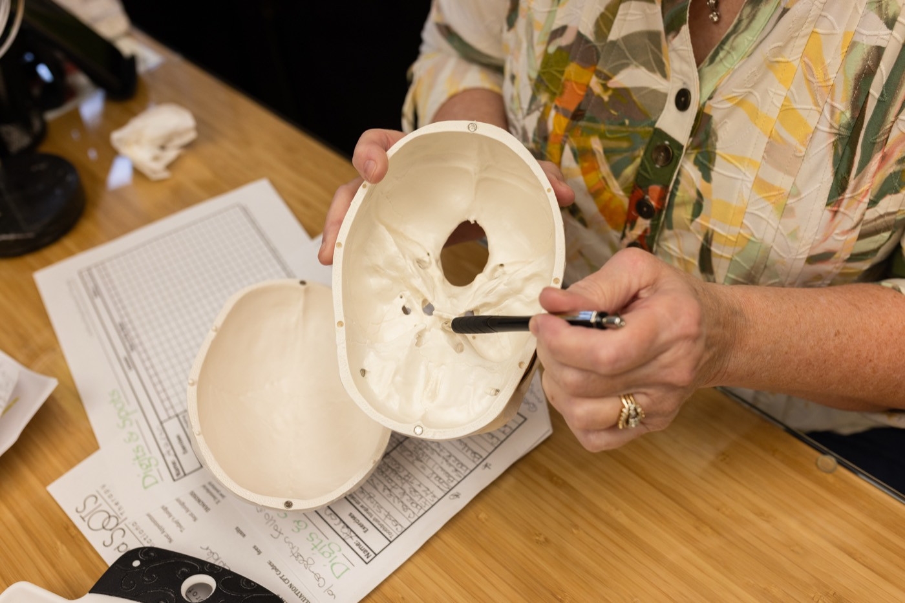
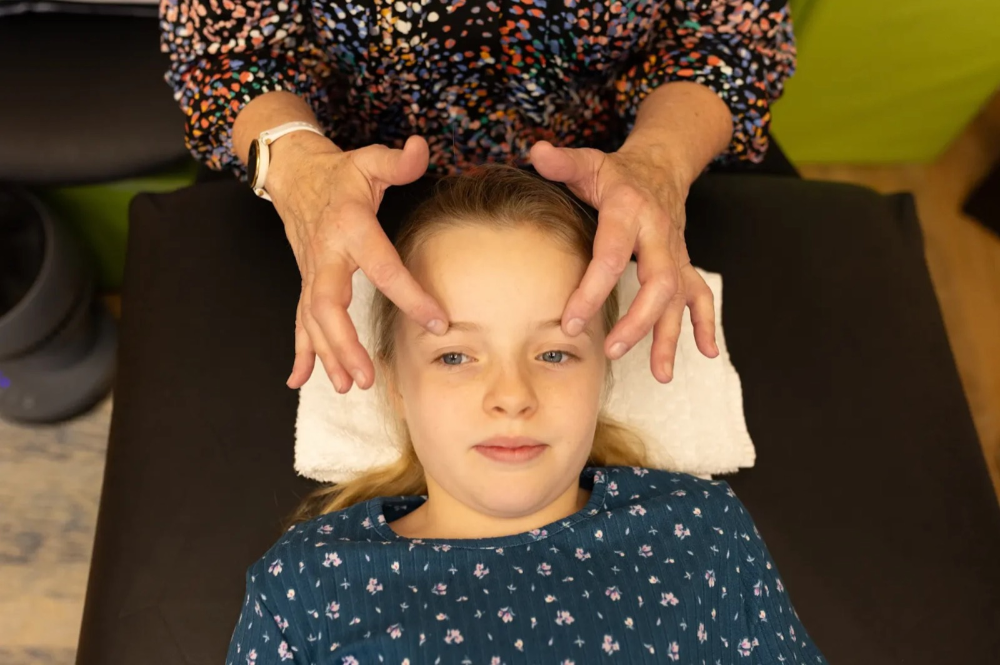
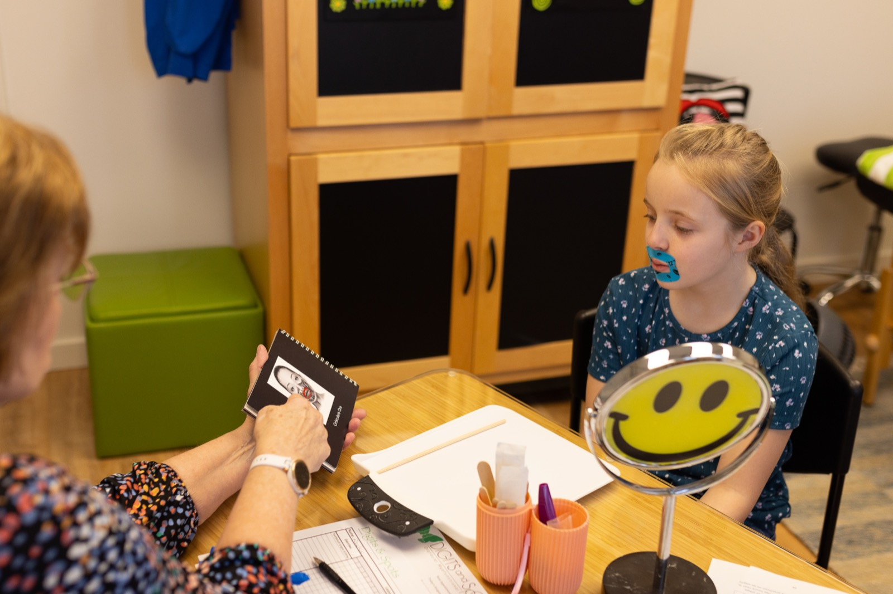

Why Digits & Spots
Kathleen M. Elder founded Digits & Spots in 2003 to bring dedicated, specialist-level orofacial myofunctional therapy to Kansas City families. The name captures two of the most common presenting concerns: "Digits" refers to thumb and finger sucking habits; "Spots" refers to the correct resting position of the tongue tip against the palate.
Most dental and medical practices offer OMT as one service among many. Digits & Spots does one thing — and does it at a depth that a generalist cannot match.

Exclusively OMT
100% focused on orofacial myofunctional therapy — not a side service, but the entire practice. Patients receive Kathleen's complete expertise and undivided focus.
Team-based care
Kathleen works alongside orthodontists, ENTs, speech therapists, sleep physicians, and other specialists — communicating findings and coordinating care for better outcomes.
Personalized therapy
Every treatment plan is built around the individual — their history, their pattern of dysfunction, and their goals. No two plans look the same.
Kathleen M. Elder, RDH (Retired), COM

As a registered licensed dental hygienist, Kathleen has worked in general, dental, and orthodontic practice settings across Kansas and Missouri since 1980. It was in orthodontics that she first encountered orofacial myofunctional therapy.
She presently serves on the IAOM board of examiners. In 2008 she became the first IAOM Certified Orofacial Myologist in Kansas — a designation she has maintained and expanded through continuous study ever since, and she has been deeply involved in the growth of the IAOM for many years, including serving on its Board of Directors and co-chairing the 2022 Annual IAOM Convention in Kansas City.
Speaking, publishing, and leading in the field
A multi-disciplinary approach to therapy
Kathleen's first OMT instructor was Rose Van Norman — considered the "guru" of digit sucking cessation. She has since studied with many originators of coursework in this specialty and integrates several complementary modalities into her practice.

Craniosacral Therapy
Trained through the Upledger Institute. Light-touch bodywork releasing fascial restrictions in the tongue, jaw, head, and neck to enhance OMT outcomes.
Buteyko Breathing
Trained in the Buteyko Method (Patrick McKeown). Functional nasal breathing strategies for sleep-disordered breathing, snoring, and chronic mouth breathing.
Primary Reflex Integration
MNRI "Core in Training" (working toward certification) and trained in Rhythmic Movement Training. Retained primitive reflexes can interfere with orofacial development — Kathleen addresses these for lasting results.
Postural & Neuromuscular
Extended studies include the Postural Restoration Institute (PRI) — including independent study with a PRI specialty-trained PT, Dr. Matt Stensrud — Restorative Breathing (Laynee), and myofascial release with John Kelly, MPT.


Inside the practice in Olathe, Kansas.
"I am dedicated to assisting my patients in identifying myofunctional disorders, guiding individuals in their redefined neuromuscular health care goals, and to early childhood development and prevention."
— Kathleen M. Elder, RDH (Retired), COM